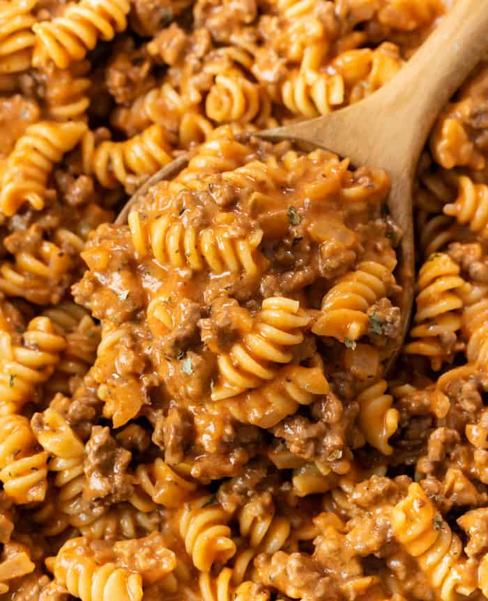

Chicken with White Sauce

rich, creamy, and delicious-comfort food at its best. Sometimes called creamy chicken sauce
view recipeGround Beef Pasta

Easy ground beef recipes are the best. The ingredients in this one are super simple,
view recipeAl Kabsa

A Suadi recipe that combines fragrant basmati rice and tender chicken infused with a tomato sauce.
view recipe